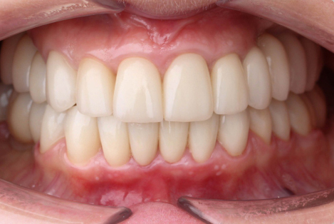
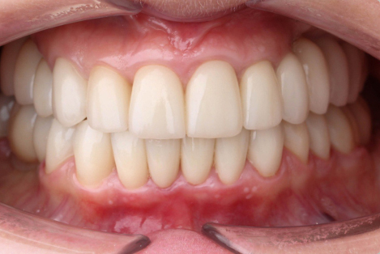

Окунев Павел Юрьевич
Старший стоматолог-ортопед
- Специализация — ортопедическая стоматология (протезирование зубов)
- Эстетическая и функциональная комплексная реабилитация
- Протезирование на зубах и имплантах
- Коронки керамические, диоксид циркония
- Виниры керамические
- Накладки керамические (инлэй онлэй оверлэй)
- Сплинт-терапия (изменение прикуса, лечение мышечно-суставных дисфункций)
Стаж 24 года
Высшая категория
Обладаю всеми необходимыми современными знаниями и навыками для оказания квалифицированной стоматологической помощи на высшем мировом уровне.
Образование
- Окончил Санкт-Петербургский Государственный Медицинский Университет имени академика И.П. Павлова в 1999 году. Проходил интернатуру на кафедре ортопедической стоматологии СПБГМУ им. Павлова.
- Имею сертификат специалиста по ортопедической, терапевтической и хирургической стоматологии.
- Обучался у ведущих специалистов России, Европы и Америки. Сотрудничаю с ведущими специалистами смежных специальностей и зуботехническими лабораториями в стране и за рубежом.
- Постоянно посещаю практические и теоретические семинары, съезды, курсы и конференции.
- Работал в ряде ведущих стоматологических клиник города.
Сертификаты

Записаться на приём к врачу можно уже сегодня
Укажите свой номер телефона, мы перезвоним и подберем для Вас удобное время приема.
Работы врача
 

Отзывы
Контакты
Санкт-Петербург+79112111261
Пионерская, Коломяжский проспект, д.20
Ленинский пр-т, Народного Ополчения, д.10
Запишитесь на приём
Укажите свой номер телефона, мы перезвоним и подберем для Вас удобное время приема.